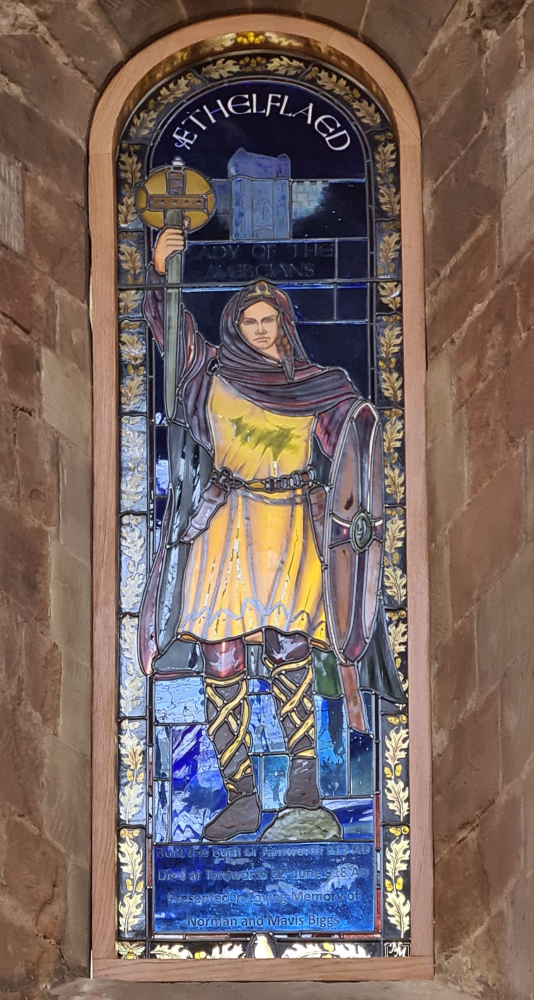
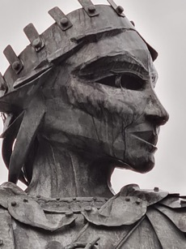
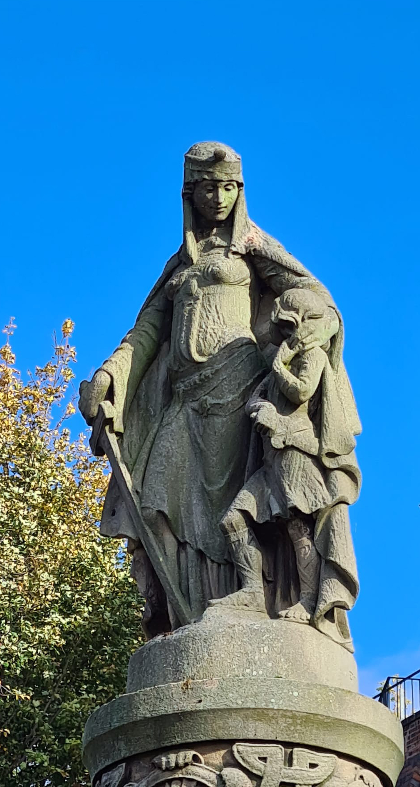

Æthelflæd, Lady of the Mercians may have been written out of history, but today we can find evidence of her life and achievements in many places.
Tamworth was an ancient capital of Mercia until it was sacked by the Vikings in the 9th century. During Æthelflæd's time, it was a border town between the Danelaw and Mercia. She renovated and reinforced it as one of her line of burhs, a network of fortified settlements to protect against attackers. She used Tamworth as her base when she invaded the Danelaw in her later years, and she died there in her royal residence close to the site of the later Tamworth castle. As described in the book, she restored the church that was dedicated to St Editha, daughter of a Wessex king. She is now commemorated in the local church with her own stained glass window.
Tamworth has been very conscientious in remembering Æthelflæd's role in their history. A statue of her, sword in hand, looking down on a young Athelstan, was created by Edward George Bramwell in 1913, one thousand years after she re-entered the town. The town regularly commemorates her life: a pageant in 2013, celebrated the centenary of the unveiling of the statue; in 2018, a service was held in the Church of St Editha to commemorate her death on 12th June, 1100 years before. About 500 guests attended including the Earl of Wessex, the Danish Ambassador, several bishops, military representatives, at least six professors of history, local dignitaries and representatives from the towns which had been founded or rebuilt by Æthelflæd. In 2018 a modern 20 ft. statue by Luke Perry was erected on a roundabout next to the town's railway station.



"In the following year, 913, I was ready for my boldest move yet against the Danes. I marched on the ancient royal centre of Mercia. I took an army to Tamworth. It was not just an army. I took workmen to rebuild what had once been King Offa's great hall and residence. I took my household of clerks and priests. It was to be my permanent camp on the frontline of our struggle to reclaim the middle lands of England that my ancestors had ruled for centuries. It was in Tamworth, that King Offa had received vassal kings and lords from far and wide and I was determined to reinstate it to its former glory. Those who lived in the surrounding Danelaw would see that there was now an alternative to being ruled by the Danes. Tamworth is sited on the juncture of two rivers, the Tame and the Anker, which protect its southern boundary. I was first to ride my horse across the ford near the confluence of the rivers and up the incline towards the ancient buildings. We had sent scouts ahead, so I knew there was no danger and I wanted to show that the Mercian royal family was returning to its home. When I caught sight of the ancient palace and the church, tears sprang into my eyes. I looked upon a desolate ruin of rotten wood and crumbled masonry overgrown with weeds. The inhabitants had long gone and rats scurried around the fallen timbers."
— King Alfred's Daughter, Chapter 21, David Stokes, 2023